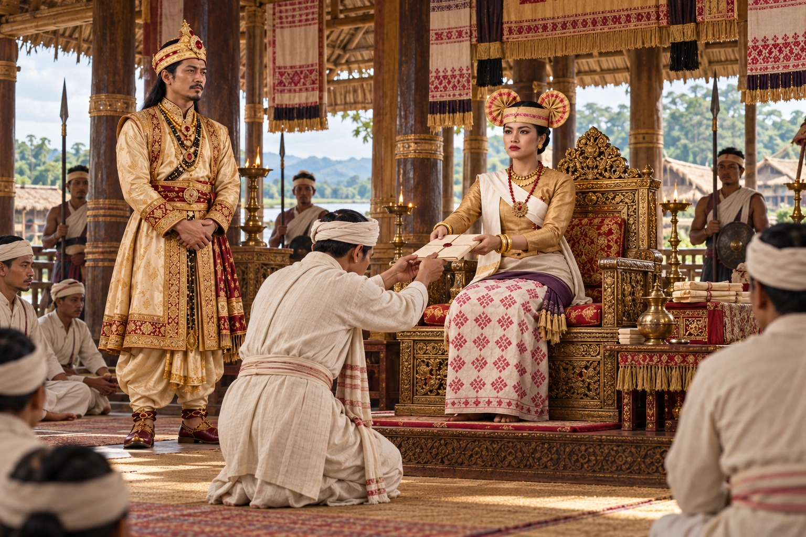

Sarbeswari Becomes the Third Bar Raja
1739 · The Tungkhungia kings

After Ambika's death, Siva Singha raises another queen to rule as Bar Raja under the name Sarbeswari; she holds the title until his death in 1744.
Sources differ on her earlier name (Akari Gabharu or Enadari). Sarbeswari receives state papers as Bar Raja with Siva nearby. The ceremony is illustrative; accounts vary on her earlier name.
People: Sarbeswari (Endari), Siva Singha (Sutanphaa)
Open this scene in the interactive archive · Follow this event on MAP